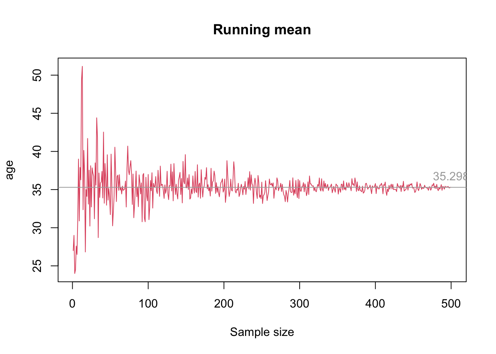
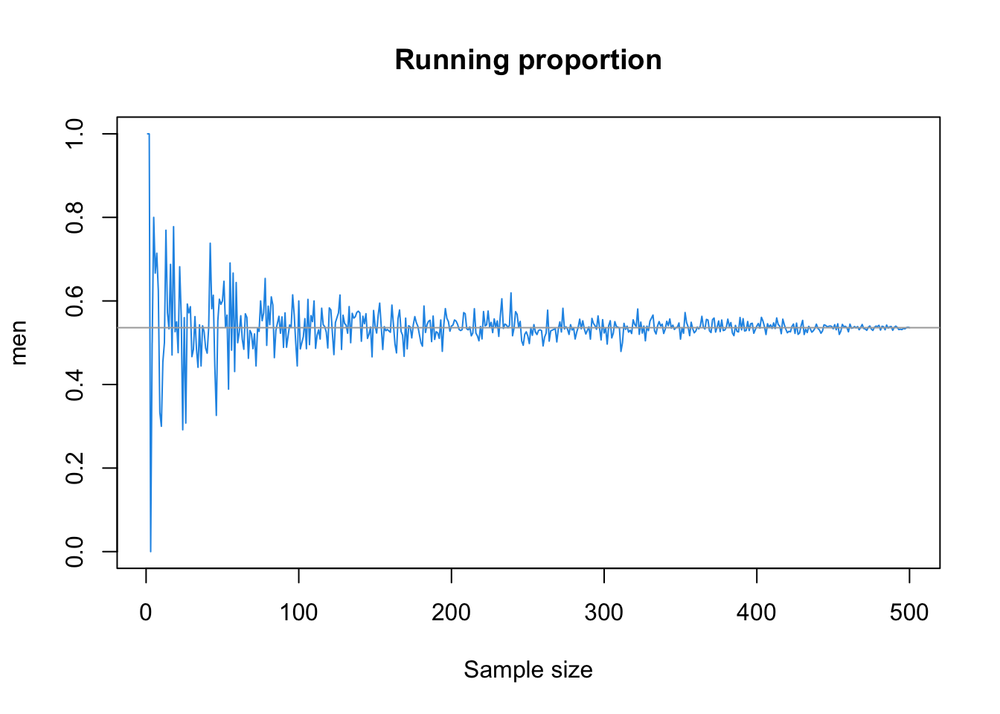
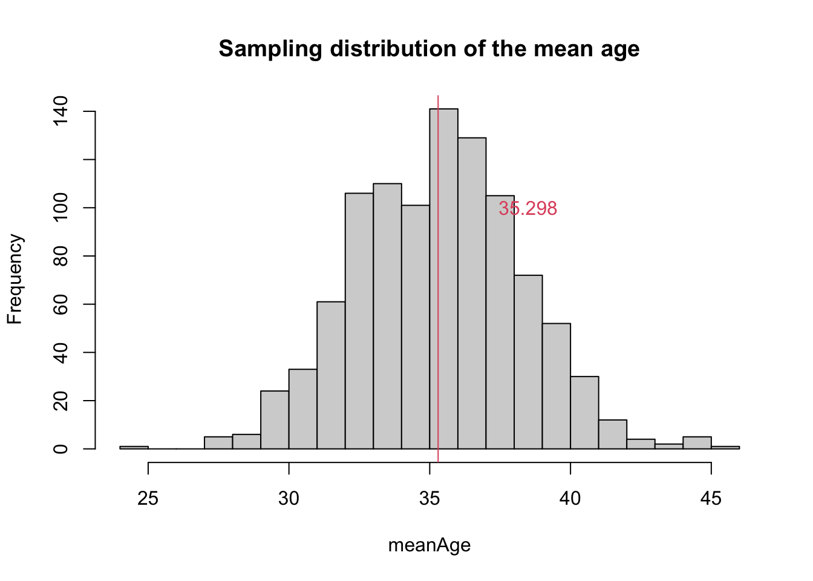
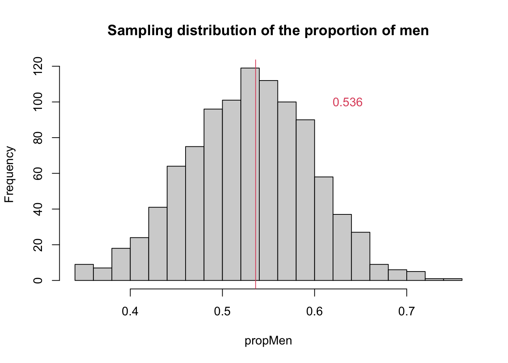
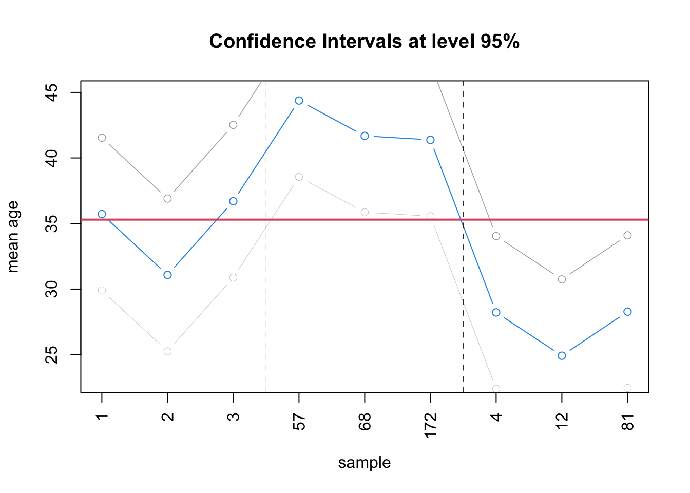
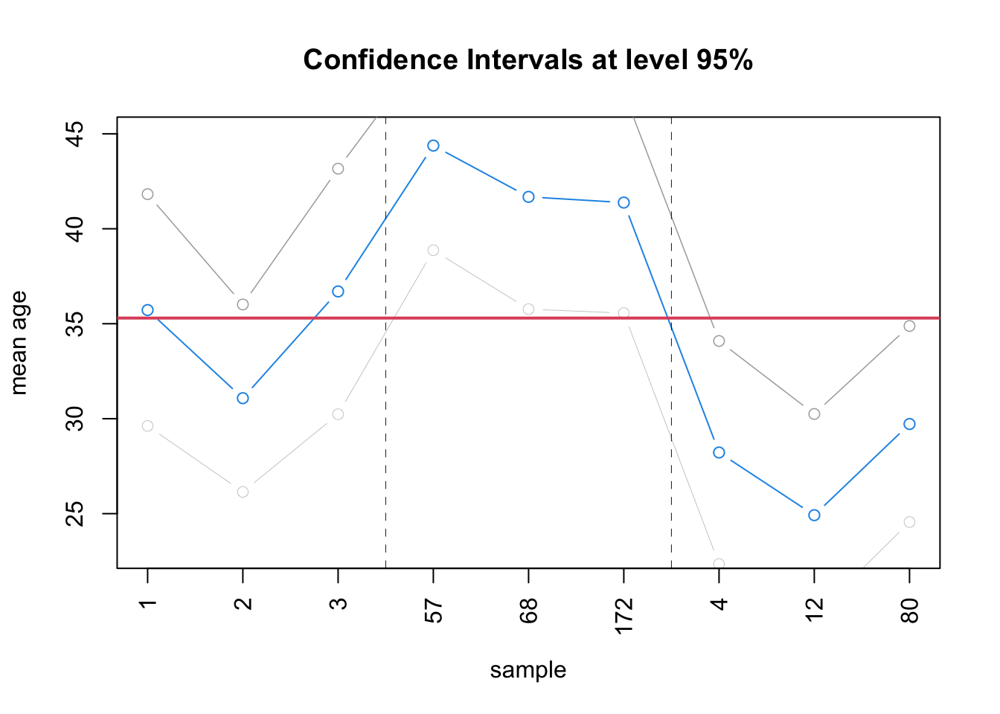

census <- read.table("data/US/UScensus2000.txt",
header = T, sep = "\t")
nrow(census)
#> [1] 500
summary(census)
#> censusYear stateFIPScode totalFamilyIncome age
#> Min. :2000 Length:500 Min. : 0 Min. : 0.0
#> 1st Qu.:2000 Class :character 1st Qu.: 21500 1st Qu.:17.0
#> Median :2000 Mode :character Median : 43000 Median :35.0
#> Mean :2000 Mean : 57411 Mean :35.3
#> 3rd Qu.:2000 3rd Qu.: 70700 3rd Qu.:51.0
#> Max. :2000 Max. :892050 Max. :93.0
#> NA's :15
#> sex raceGeneral maritalStatus totalPersonalIncome
#> Length:500 Length:500 Length:500 Min. : -4400
#> Class :character Class :character Class :character 1st Qu.: 5900
#> Mode :character Mode :character Mode :character Median : 17750
#> Mean : 29082
#> 3rd Qu.: 37000
#> Max. :456000
#> NA's :10819 Statistical Inference
In this chapter, we first introduce point estimates and then confidence interval estimations.
We will use a census extract of the US population as the main dataset, UScensus2000.txt (see data/US folder)
19.1 Point Estimates
To estimate the population mean \(\bar{X}\) (or other metrics such as variance or median) based on a sample, we typically use the sample mean:
\[\bar{x} = \dfrac{1}{n} \sum_{i=1}^n x_i\]
The sample mean, \(\bar{x}\), is known as a point estimate of the population mean.
19.1.1 Problem
If we draw another sample from the same population and calculate the new sample mean, we are likely to obtain a different point estimate. This difference is referred to as sampling variation.
In other words, an estimate is close to the true value but not exactly equal to the actual (population) parameter value. Additionally, sampling variation is expected to decrease as the sample size increases. A point estimate converges to the population parameter value as the sample size grows and approaches the size of the entire population.
19.1.2 Example
We suppose that the dataset census contains our target population. Our aim is to estimate the population mean for the variable age and the proportion of the different genders in the case of variable sex.
We look at the running mean of the variable age and at the running proportion of men for the variable sex.
We start by extracting from the total population a sample made of one observation: \(n = 1\). At each step, we extract randomly a new sample with one additional observation. We use a sampling with replacement, i.e. the previous sample is not simply augmented: we take a new sample (made of completely new individuals) each time. We stop when we reach the total population, i.e. when \(n = 500\) in our case.
The key function for sampling in R is sample(), which randomly selects a number (arg size) of records for a given vector (or, if none are specified, outputs a vector of \(1\) to \(size\) integers in a random order, see below for examples of the sample() function).
Note also that we introduce here a “for loop” to iterate from 1 to \(N=500\) (our total population)
N <- nrow(census) #500
mu_age <- mean(census$age) #our population mean (usually unknown)
mu_men <- mean(census$sex == 'Male') #now our population proportion of males (usually unknown)
#Prepare a vector of Means and Proportions
rMeanAge = NULL
rPropMale = NULL
set.seed(201292)
for (i in 1:N) {
sample <- census[sample(N, i), ]
rMeanAge[i] <- mean(sample$age)
rPropMale[i] <- mean(sample$sex == "Male")
}
rm(sample) #we don't keep the last sample
plot(rMeanAge, type = 'l', col = 2,
xlab = 'Sample size', ylab = 'age',
main = 'Running mean')
abline(h = mu_age, col = 'darkgray')
text(500, mu_age + 1.5, mu_age, col = 'darkgray')
plot(rPropMale, type = 'l', col = 4,
xlab = 'Sample size', ylab = 'men',
main = 'Running proportion')
abline(h = mu_men, col = 'darkgray')
text(500, mu_men + .05, mu_men, col = 'darkgray')
19.1.3 Standard Error
To quantify the uncertainty of a point estimate, we use its standard error. The standard error of an estimate (e.g. the mean) is the standard deviation of its sampling distribution.
The notion is not to be confused with the standard deviation of the sample: - the standard error of the sample mean indicates how far the sample mean is from the population mean. - the standard deviation of the sample indicates how far each individual data within the sample is from the sample mean.
The exact value of the standard error of the mean (or of the proportion) is \[SE_{\bar{x}} = \dfrac{\sigma}{\sqrt{n}}\] which in our case can be computed, given we know the population:
sd(census$age)/sqrt(N)
#> [1] 0.9754678
sd(census$sex == "Male")/sqrt(N)
#> [1] 0.02232498However, the standard deviation of the population is usually not known and actually we would not need a point estimate and a standard error if we were knowing the total population.
The standard error of the mean (or proportion) is thus estimated by replacing \(\sigma\) in the definition with the standard deviation of the sample used to make the point estimate, i.e. \(s\)
\[SE_{\bar{x}} = \dfrac{s}{\sqrt{n}}\]
The denominator, \(\sqrt{n}\), reflects how the variability of the sample mean decreases as the sample size increases. Also, due to the square root, we see that a willingness to reduce the error of the estimate by two requires four times as many observations.
Suppose a sample of 25 or 100 observations, the standard error would be
set.seed(101)
sample_age25 <- sample(census$age, 25)
SEage25 <- sd(sample_age25) / sqrt(25)
SEage25
#> [1] 4.464631
sample_age100 <- sample(census$age, 100)
SEage100 <- sd(sample_age100) / sqrt(100)
SEage100
#> [1] 2.174494
sample_sex25 <- sample(census$sex, 25)
SEmen25 <- sd(sample_sex25 == 'Male') / sqrt(25)
SEmen25
#> [1] 0.09797959
sample_sex100 <- sample(census$sex, 100)
SEmen100 <- sd(sample_sex100 == 'Male') / sqrt(100)
SEmen100
#> [1] 0.04988877where we see the reduction in error due to sample size. From 100 to 25, the error is roughly halved The standard error of the mean of the sample tends to zero when the sample size is increased. Indeed we have seen earlier with the running means and proportions that sample means get very close to the population mean when sample size is increased and approaches the population.
19.1.4 Sampling Distribution
Let’s now build the sampling distribution of the sample mean. So we can see the shape of that distribution and see that the standard error is indeed the standard deviation of the sampling distribution
We draw \(K = 1000\) samples of size \(n = 50\) from the population.
K <- 1000
N<-nrow(census)
n<-50
meanAge = NULL
propMen = NULL
set.seed(345)
for (i in 1:K) {
sample <- census[sample(N, n), ]
meanAge[i] <- mean(sample$age)
propMen[i] <- mean(sample$sex == 'Male')
}
rm(sample)
hist(meanAge, breaks = 25,
main = 'Sampling distribution of the mean age')
abline(v = mu_age, col = 2)
text(38.5, 100, mu_age, col = 2)
hist(propMen, breaks = 20,
main = 'Sampling distribution of the proportion of men')
abline(v = mu_men, col = 2)
text(mu_men + .1, 100, mu_men, col = 2)
In our case, the distribution of the mean and of the proportion are symmetric and centered around the real value \(\mu = 35.298\) (mu_age) and \(\mu = 0.536\) (mu_men).
Following the Central Limit Theorem, no matter whether the true population is normal or not, the sample mean is approximately normally distributed when sample size is large (we often see a value of \(> 30\) to consider a sample is not small)
Since we are lucky enough to have a large amount of samples, we can estimate the standard error directly form its definition, i.e. the standard deviation of the sample means.
In this case:
sd(meanAge) #standard deviation of the sample means
#> [1] 2.970229
sd(propMen) #standard deviation of the sample proportions
#> [1] 0.0685809219.2 Confidence Interval Estimation
Due to the error in point estimates, it is often relevant to look at intervals instead of just the exact points. The range of values of estimates for a given parameter is called a confidence interval (CI). To build a confidence interval we need three elements:
- A point estimate \(\hat{\theta}\) for the parameter of interest \(\theta\)
- The standard error associated with the point estimate \(SE_{\hat{\theta}}\)
- A confidence level \(1 - \alpha\)
We know the first two elements. A confidence interval uses the information about the uncertainty of the point estimate to define the range of values such that we are confident at a level \(1 - \alpha\) that it captures the true (population) parameter value. We call \(1 - \alpha\) the confidence level.
For \(\alpha = 5\% = 0.05\), we can say that
“We are 95% confident that the interval will capture the population parameter.”
In other words:
“If we generate 100 samples, and compute their confidence interval, in 95 cases, the interval will contain the parameter value”.
When a point estimate \(\hat{\theta}\) follows a normal distribution (case of a sufficiently sample size), its confidence interval is defined by: \[[\hat{\theta} \pm z_\alpha SE]\]
Here, \(z_\alpha SE\) is the margin of error.
Under a normal distribution:
- \(z_{0.1} = 1.645\): 90% confidence interval
- \(z_{0.05} = 1.96\): 95% confidence interval
- \(z_{0.001} = 2.58\): 99% confidence interval
19.2.1 Example
In the case of the age variable of the census data, the intervals for each of our \(K\) samples are
CI95 <- data.frame(low = meanAge - 1.96 * sd(meanAge),
point = meanAge,
high = meanAge + 1.96 * sd(meanAge))
head(CI95)
#> low point high
#> 1 29.89835 35.72 41.54165
#> 2 25.25835 31.08 36.90165
#> 3 30.87835 36.70 42.52165
#> 4 22.39835 28.22 34.04165
#> 5 28.71835 34.54 40.36165
#> 6 29.07835 34.90 40.72165While in most cases, the interval is within the 95% confidence range around \(\mu = 35.298\), the upper bounds of the confidence intervals for some of the samples can exceed \(\mu + 1.96 \times SE_{\text{age}}\), indicating that these samples have higher or lower sample means and greater variability, thus suggesting they are less reliable as estimates of the population mean.
We can find out those cases for example as follow:
abov<-which(CI95$low>mu_age)
belo<-which(CI95$high<mu_age)
abov
#> [1] 57 68 172 175 190 209 244 277 477 505 548 571 606 631 692 748 786 810 839
#> [20] 841 857 976 984
belo
#> [1] 4 12 81 93 137 139 148 187 197 261 380 400 432 461 633 644 763 773 853
#> [20] 876 886Interestingly, but not surprisingly, we can see there are roughly 25 cases where the CI range is too high and 25 where the CI range is too low. Well that is 50 out 1000 samples and the exact meaning of \(\alpha=0.05\):
If we generate 1000 samples, and compute their confidence interval, in 950 cases, the interval will contain the parameter value.
We show the confidence interval for 3 samples (out of the 95%) where the point estimate can be trusted to represent the population mean, followed by 3 of the too high cases and 3 of the too low cases.
a_subset<-c(1:3,abov[1:3],belo[1:3])
plot(CI95[a_subset, 'low'], col = 'darkgray', lwd = .3,
type = 'b', ylim = c(23,45),
xlab = 'sample', ylab = 'mean age',
main = 'Confidence Intervals at level 95%',
xaxt="n")
lines(CI95[a_subset, 'point'], col = 4, type = 'b')
lines(CI95[a_subset, 'high'], col = 'darkgray', lwd = .75, , type = 'b')
abline(h = mu_age, col = 2, lwd = 2)
abline(v = 3.5, lwd = 0.5, col="grey10",lty=2)
abline(v = 6.5, lwd = 0.5, col="grey10",lty=2)
axis(1, at=1:length(a_subset), labels=a_subset,las=2)
Unfortunately, in the large majority of cases, we would not be able to compute the standard error this way as we would only have one or two samples. The only solution is then to use the standard deviation of the sample divided by the square root of the sample size (see earlier equations) as a best guess for the standard deviation of the distribution of sample means, i.e. to make up the standard error.
So far, we haven’t stored that information (i.e. standard deviation for each sample). We need to relaunch the exact same samples (luckily we used a seed). We do it for age only:
K <- 1000
meanAge = NULL
sdAge = NULL
set.seed(345)
for (i in 1:K) {
sample <- census[sample(N, n), ]
meanAge[i] <- mean(sample$age)
sdAge[i] <- sd(sample$age)
}From each standard deviation, we compute the standard error:
seAge<-sdAge/sqrt(n) #sample sd error
head(seAge)
#> [1] 3.112849 2.517504 3.298144 2.995001 3.229483 2.931775
head(seAge>sd(meanAge)) #compare sample standard error and sampling distribution st dev
#> [1] TRUE FALSE TRUE TRUE TRUE FALSEwhere we see there is variety which will also make the CI different (not constant) for each sample and thus change the decision on the relevance of each sample mean:
CI95s <- data.frame(low = meanAge - 1.96 * seAge,
point = meanAge,
high = meanAge + 1.96 * seAge)abovs<-which(CI95s$low>mu_age)
belos<-which(CI95s$high<mu_age)
abovs
#> [1] 57 68 172 175 190 209 277 477 505 548 571 606 748 786 792 810 813 839 857
#> [20] 976
belos
#> [1] 4 12 80 81 93 117 137 139 148 187 197 261 278 380 400 432 461 471 633
#> [20] 638 644 705 723 763 773 853 876 886a_subset<-c(1:3,abovs[1:3],belos[1:3])
plot(CI95s[a_subset, 'low'], col = 'darkgray', lwd = .3,
type = 'b', ylim = c(23,45),
xlab = 'sample', ylab = 'mean age',
main = 'Confidence Intervals at level 95%',
xaxt="n")
lines(CI95s[a_subset, 'point'], col = 4, type = 'b')
lines(CI95s[a_subset, 'high'], col = 'darkgray', lwd = .75, , type = 'b')
abline(h = mu_age, col = 2, lwd = 2)
abline(v = 3.5, lwd = 0.5, col="grey10",lty=2)
abline(v = 6.5, lwd = 0.5, col="grey10",lty=2)
axis(1, at=1:length(a_subset), labels=a_subset,las=2)
The decision would have changed for some of the samples, for example 723 and 984, knowing mu_age is 35.298.
rbind(CI95s[c(723),],CI95[c(723),],CI95s[c(984),],CI95[c(984),])
#> low point high
#> 723 24.19980 29.72 35.24020
#> 7231 23.89835 29.72 35.54165
#> 984 35.09008 41.56 48.02992
#> 9841 35.73835 41.56 47.3816519.2.2 Note on the sample() function
When applied to a vector x, sample() selects a set of values within the vector. The size of this set (i.e. the size of the sample) is given though the argument size. Although there is no explicit default to the argument (see help), it is inferred from the length of x is not given. Hence when size is missing sample(x) provides a random permutation of the vector x. Don’t forget to use set.seed() to keep a particular permutation
set.seed(101)
sample(c("A","B","C","D"))
#> [1] "A" "D" "B" "C"
set.seed(102)
sample(c("A","B","C","D"))
#> [1] "C" "B" "A" "D"When size is explicit, a random subset is returned. In the case of a random draw withour replacement (default) size cannot be smaller than length(x). It can if replacement is allowed:
sample(c("A","B","C","D"),2)
#> [1] "D" "C"
#sample(c("A","B","C","D"),6) error
sample(c("A","B","C","D"),10, replace = TRUE)
#> [1] "A" "D" "B" "D" "C" "C" "C" "A" "C" "C"When applied to a scalar x, sample returns a random permutation of values from 1 to x, or a subset of it if size is indicated:
sample(7)
#> [1] 6 5 4 7 1 2 3
sample(7)
#> [1] 6 2 7 3 4 1 5
sample(7,size=3)
#> [1] 5 3 4
sample(7,size=10, replace=TRUE)
#> [1] 3 1 2 1 7 1 2 7 3 2It is useful as such but also when applied to a data.frame.
For sampling a random set of rows over a data.frame you use sample with a scalar corresponding to the number of rows in the data.frame. This returns a random permutation of the identification of each row, which you can then use to reshuffle or subset the data set:
data<-data.frame(Y=c("A","B","C","D"), Z=11:14)
data
#> Y Z
#> 1 A 11
#> 2 B 12
#> 3 C 13
#> 4 D 14
set.seed(101)
sample(nrow(data))
#> [1] 1 4 2 3
#reshuffle (permutation)
set.seed(101)
data[sample(nrow(data)),]
#> Y Z
#> 1 A 11
#> 4 D 14
#> 2 B 12
#> 3 C 13
#random subset
set.seed(101)
data[sample(nrow(data),size=2),]
#> Y Z
#> 1 A 11
#> 4 D 1419.2.3 Other example:
We have a sample of 100 trees with measurements of their diameter at breast height. We are interested in the mean value and standard error. The point estimate equals 164 with an empirical variance of 333221.
What is the standard error of the sample mean?
n <- 100
variance <- 333221
# compute sample standard deviation
s <- sqrt(variance)
s
#> [1] 577.253
# compute standard error of the sample mean
SE_mean <- s / sqrt(n)
SE_mean
#> [1] 57.7253What is the standard error if the sample was made of 1000 trees?
SE_mean <- s / sqrt(1000)
SE_mean
#> [1] 18.25434